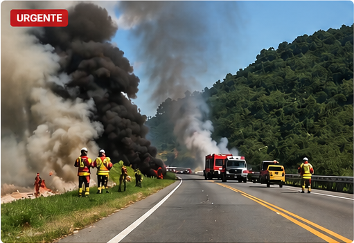

Transito
Fogo as margens da BR-101 mobiliza equipes durante a manha
Ocorrencia chamou a atencao de motoristas e moradores da regiao.
Noticias
Os principais acontecimentos de Porto Belo, Tijucas e regiao com atualizacao rapida e linguagem direta.

Transito
Ocorrencia chamou a atencao de motoristas e moradores da regiao.
Estradas
Fluxo ficou carregado em trecho movimentado da rodovia.

Cidade
Previsao anima comerciantes e visitantes nas praias.

Plantao
Informacoes iniciais foram apuradas durante a tarde.

Esporte
Clubes da regiao se preparam para mais uma disputa.

Publicidade
Novos formatos comerciais estao disponiveis para anunciantes.
Usamos dados basicos de navegacao para melhorar sua experiencia. Ao continuar, voce concorda com nossa politica de privacidade.